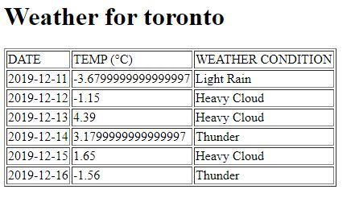
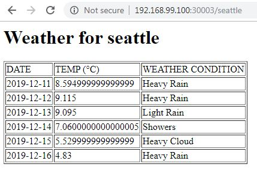

For a great deal of developers, myself included, doing something is the preferred method of learning as opposed to reading how to do it. When I was wrapping my head around using kubernetes to manage my docker containers, I found that creating a deployment from scratch was invaluable. I’d like to walk you through that deployment and explain everything along the way.
Before we jump in, you’ll need to have:
- docker installed
- access to a kubernetes cluster (this can be a hosted cluster in the cloud or a local cluster via docker desktop or minikube)
- kubectl installed and configured to access the cluster from 2
- this example repo downloaded locally
- a cup of your beverage of choice (recommended but not required)
Weathering the storm
The example application we’ll be deploying (which I lovingly call Pyweather) is a stateless two tier affair written in Python and leverages the Flask web framework. It will return the 5 day forecast for a given city and retrieves data from the Metaweather API.
It’s been styled very humbly, as evidenced by the below screenshot. 
Quite the looker, huh? Let’s go over how to deploy it on kubernetes and its inner workings.
Look at me, I’m the captain now
Kubernetes is a container orchestrator; it manages (among other things) the lifecycle of containers. It takes care of starting them, monitoring them, and destroying them when the inevitable time comes.
It is a declarative tool and this means instead of saying, “Hey kubernetes, start 4 containers from this image” (an imperative approach), we give it a config file called a manifest with instructions on what we want to run and how it should be configured. Its job is to then make sure that this configuration or spec is always running in the cluster.
For example, this is part of the deployment manifest of the Pyweather frontend:
apiVersion: apps/v1
kind: Deployment
metadata:
name: pyweather-frontend-deployment
spec:
replicas: 3
...
template:
spec:
containers:
- name: pyweather-frontend
image: tunzor/pyweather-frontend:distroless
ports:
- containerPort: 5002
Here we’re giving kubernetes an overview of what we want our application to look like. We’re telling it to use this image image: tunzor/pyweather-frontend:distroless that listens on this port containerPort: 5002 and ensure that there are always 3 instances of it replicas: 3.
These manifest files represent kubernetes objects and are used for many things including pods (read: effectively a docker container), services (a way to reach several pods), and volumes (data storage).
TL;DR
We give kubernetes manifest files that describe our application and it makes it so.
Kubernetes, iceberg pellets ahead [in the forecast]!
If we dive into our example repo from above (specifically the pyweather directory), we see two more directories weather-backend and weather-frontend which represent, you guessed it, the front and back ends of Pyweather. If you’re feeling adventurous, peruse them to see the python code, dockerfiles, and manifests of the application.
Now draw your attention the README.md file, specifically the kubectl command in it:
kubectl apply -f weather-frontend/manifests/ -f weather-backend/manifests/
What this magical apply command does is feed the manifests files for both tiers to kubernetes. This is all it takes to get the entire application up and running. What a time to be alive.
Go ahead and run it from within the pyweather directory. Assuming you have a cluster to connect to and your kubectl is configured correctly, you should see the following output:
$ kubectl apply -f weather-frontend/manifests/ -f weather-backend/manifests/
configmap/frontend-configmap created
deployment.apps/pyweather-frontend-deployment created
service/pyweather-frontend-svc created
deployment.apps/pyweather-backend-deployment created
service/pyweather-backend-svc created
You did it, you created the application! Let’s take a look and make sure everything is okay:
kubectl get all
Side Note
kubectl get allwill return all resources (deployments, pods, services, etc.) and since Pyweather consists of several different kinds, this is the fastest way to see them all at once. You can alternatively use thekubectl getcommand to retrieve specific resources like podskubectl get podsor serviceskubectl get svc.
Look at all those beautiful resources.
$ k get all
NAME READY STATUS RESTARTS AGE
pod/pyweather-backend-deployment-db76c7c9d-pgbqc 1/1 Running 0 54m
pod/pyweather-backend-deployment-db76c7c9d-zjfdl 1/1 Running 0 54m
pod/pyweather-frontend-deployment-654dbf4848-nj9fz 1/1 Running 0 54m
pod/pyweather-frontend-deployment-654dbf4848-pbz22 1/1 Running 0 54m
pod/pyweather-frontend-deployment-654dbf4848-rg25f 1/1 Running 0 54m
NAME TYPE CLUSTER-IP EXTERNAL-IP PORT(S) AGE
service/kubernetes ClusterIP 10.96.0.1 <none> 443/TCP 71d
service/pyweather-backend-svc ClusterIP 10.108.53.212 <none> 8053/TCP 54m
service/pyweather-frontend-svc NodePort 10.110.8.52 <none> 8052:30003/TCP 54m
NAME READY UP-TO-DATE AVAILABLE AGE
deployment.apps/pyweather-backend-deployment 2/2 2 2 54m
deployment.apps/pyweather-frontend-deployment 3/3 3 3 54m
NAME DESIRED CURRENT READY AGE
replicaset.apps/pyweather-backend-deployment-db76c7c9d 2 2 2 54m
replicaset.apps/pyweather-frontend-deployment-654dbf4848 3 3 3 54m
Resources are great and all but what now? Where’s my weather?!
From the readme above, we can see that in order to access the application, we need to hit http://{nodeIP}:30003/{city} and pass a city in place of {city}. But what’s that {nodeIP} bit? The nodeIP is the IP address of any of the kubernetes nodes. We can find them by running kubectl cluster-info (the output below is from minikube so only one node exists):
$ kubectl cluster-info
Kubernetes master is running at https://192.168.99.100:8443
Side Note
NodePortis a type of service that exposes the service on a static port that’s accessible via any of the cluster’s nodes.
We then substitute the node’s IP address into our URL from above and navigate to it in our browser. For me it’d be https://192.168.99.100:30003/seattle.
Lo and behold, there’s our Pyweather page!

That’s it, you’ve deployed and tested an application successfully on a kubernetes cluster. If you want to know how we got kubernetes to do it, continue reading below.
The secret sauce
Kubernetes may seem magical but it’s only doing what we’ve asked it to do. Let’s pull back the sheet on this magic.
In pyweather/weather-backend/manifests/deploy-backend.yaml we see that our backend container is configured to listen on port 5003 (check out the containerPort line below):
apiVersion: apps/v1
kind: Deployment
metadata:
name: pyweather-backend-deployment
labels:
tier: backend
spec:
replicas: 2
selector:
matchLabels:
tier: backend
template:
metadata:
labels:
tier: backend
spec:
containers:
- name: pyweather-backend
image: tunzor/pyweather-backend:distroless
ports:
- containerPort: 5003
We then see in pyweather/weather-backend/manifests/svc-backend.yaml that the service named pyweather-backend-svc will map its service port 8053 to the target container port of 5003. This means when we hit this service on port 8053, it’ll forward the request to the container listening on port 5003.
apiVersion: v1
kind: Service
metadata:
name: pyweather-backend-svc
spec:
type: ClusterIP
selector:
tier: backend
ports:
- port: 8053
targetPort: 5003
But how does the service know which container to forward requests to? One piece of kubernetes magic is the label; it’s how we can attach things like services to pods (which run our containers).
The deployment above adds a label to the pods via the metadata part of the spec and the service then selects them with the selector bit of its own manifest. They both use the label tier: backend. The backend service is then exposed cluster-wide via its hostname pyweather-backend-svc and port 8053; any pod in the cluster can access it via the URL http://pyweather-backend-svc:8053.
We then take it a step further by providing this backend URL as a configuration variable to the frontend via a ConfigMap object defined in pyweather/weather-frontend/manifests/configmap-frontend.yaml:
apiVersion: v1
kind: ConfigMap
metadata:
name: frontend-configmap
data:
backend_url: http://pyweather-backend-svc:8053
The frontend deployment manifest pyweather/weather-frontend/manifests/deploy-frontend.yaml loads this ConfigMap and makes it available to the frontend container via the WEATHER_SVC_URL environment variable:
...
spec:
containers:
- name: pyweather-frontend
image: tunzor/pyweather-frontend:distroless
ports:
- containerPort: 5002
env:
- name: WEATHER_SVC_URL
valueFrom:
configMapKeyRef:
name: frontend-configmap
key: backend_url
Finally, in the python code pyweather/weather-frontend/weather-frontend.py, it checks for the WEATHER_SVC_URL environment variable and sets it locally for use.
if "WEATHER_SVC_URL" in os.environ:
weather_svc_url = os.environ['WEATHER_SVC_URL']
Now we now how our application works in kubernetes: it’s not magic, it’s just very careful configuration.